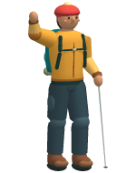

×
Place observer here
Look here
2D

Drag the observer onto the map or tap the observer button to choose a location.
Retry
360° horizon
Close-up
Settings
Remove observer
Visible
Hidden
View direction
No data
Eye height above ground
m
Target height above ground
m
Analysis radius
1 km
2 km
5 km
10 km
Map overlay
Visibility
Required height
Layer opacity
Shade hidden terrain
Analysis geometry
Sector width
360°
180°
90°
45°
Sector bearing
°
Curvature and refraction
No refraction
Standard refraction (1/7)
Flat Earth
Analysis details
Download scenario and grid
Right-drag or use two fingers to rotate the map.
Calculating horizon…